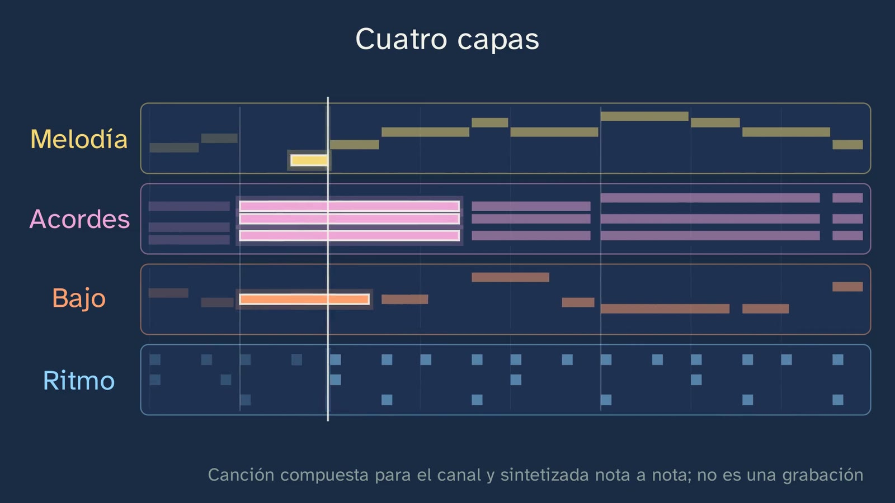

¿De qué está hecha una canción?
En pocas palabras
Es la primera clase de Música del canal y abre el tema «Una canción, capa a capa». Su mensaje cabe en una línea: una canción son capas que suenan a la vez (el ritmo, el bajo, los acordes y la melodía), cada una con su trabajo; a tu oído le llegan sumadas en una sola onda, y es tu cerebro el que las separa. Toda la música que suena la ha compuesto y sintetizado el canal, nota a nota: una canción de ocho compases en do mayor, a 90 pulsos por minuto, con la progresión do – la menor – fa – sol (I – vi – IV – V) y una melodía propia de pregunta y respuesta. Recorre todo el tema y, al acabarlo, su partitura y su audio se publicarán en el aula con licencia CC0. Ninguna canción con dueño suena, y Malik habla y nunca canta.
Antes de explicar nada, Malik pone la canción entera, que se ve como una sola onda, y pide contar cuántas cosas suenan a la vez (0:44). El gancho, con su contexto: en 1941, en Nueva York, el saxofonista Sidney Bechet grabó un disco tocando él solo seis instrumentos, uno encima de otro; diez años después, Les Paul y Mary Ford llegaron al número uno con una canción grabada capa a capa, How High the Moon; y hoy los programas de música trabajan con una pista para cada capa. Pero al oído no le llegan pistas: le llega una sola onda (2:07).
Tras recuperar de la ESO la textura (la canción es una melodía acompañada), la onda se abre en sus cuatro pistas, en el rollo de pianola: cada barra es una nota, más arriba es más aguda y más larga dura más. Quien contó más de cuatro también oyó bien: dentro del ritmo suenan tres instrumentos (3:39). Cada capa suena sola, en el rollo y en su pentagrama a la vez, y después las cuatro juntas en partitura; la clase compara las dos grafías (criterio 2.2) y cuenta que el rollo nació para una máquina, la pianola, y vive hoy en el «piano roll» de los programas (5:35). Cada capa tiene su trabajo (el pulso, el suelo, el color y lo que cantas) y las distinguen los cuatro parámetros del sonido (6:23). El alumno predice cuál echará más de menos, la canción suena quitando una capa cada dos compases, y pone palabras a lo que siente sin el bajo (criterio 1.2).
La segunda mitad responde a cómo lo sabemos. El aire sólo puede empujar el tímpano de una manera en cada instante: las cuatro capas, medidas en seis centésimas de segundo, se suman en una sola línea, sin etiquetas (8:51). La cóclea se desenrolla y cada capa enciende el tramo que hace vibrar, medido sobre su sonido con el mapa de Greenwood (1990); pero el oído no entrega capas, entrega muchos sitios que vibran, y el bajo enciende también los de sus armónicos (10:13). Juntarlos lo hace el cerebro, y dos demostraciones lo enseñan al oído, sintetizadas por el canal: las seis notas de Bregman, que despacio son una melodía que salta y deprisa se parten en dos corrientes (10:44), y un entrelazado como el de la amadinda de Uganda, donde lo que se toca no es lo que se oye (11:59). Las señales del cerebro: cerca en altura, el mismo timbre, el mismo sitio, a la vez, y los armónicos de una misma nota (12:42).
El error típico, «la canción es la melodía», se desmonta al oído: la misma melodía, nota por nota, con su acompañamiento y con otro (la menor, fa, re menor, mi menor) ya no dice lo mismo, al menos a un oído acostumbrado a nuestra música (13:19). Cierran un reto de oído (tres trozos, cada uno sin una capa) y una lectura corta (las cinco primeras notas de la melodía, en clave de sol), y la pregunta abierta: ¿dónde está la canción: en la onda, en la partitura o en tu cabeza?
Objetivo. Al terminar, el alumnado sabrá distinguir al oído las cuatro capas de una canción (ritmo, bajo, acordes y melodía), qué hace cada una y cómo las separa su oído aunque le lleguen mezcladas en una sola onda.
Currículo
Real Decreto 243/2022, anexo II, Lenguaje y Práctica Musical, materia de la vía de Música y Artes Escénicas de 1.º de Bachillerato. Texto consolidado del BOE comprobado el 28/10/2026: su última actualización, del 02/07/2026, no toca el anexo II.
| Elemento | Qué dice el decreto | Dónde se trabaja |
|---|---|---|
| Saber básico (bloque A, Lenguaje musical) | «Los elementos musicales en la tradición musical occidental, en el folclore y en las músicas populares urbanas.» | Toda la clase: las capas de una canción de hoy, y la amadinda de Uganda (11:59) |
| Saber básico (bloque A) | «Representación musical de los parámetros del sonido.» | El rollo de pianola y la partitura de cada capa (3:39 y 4:05); los cuatro parámetros (6:23); las dos grafías (5:35) |
| Saber básico (bloque B, Práctica musical) | «Estrategias de escucha o visionado de obras o fragmentos musicales.» | Contar lo que suena (0:44), cada capa sola (4:05), quitar capas (6:56), el reto de oído (14:59) |
| Competencia específica 1 | «Cultivar la escucha activa, desarrollando estrategias de atención, para reconocer y describir con un vocabulario adecuado los elementos que forman parte de una obra y para reflexionar sobre aspectos subjetivos y emocionales inherentes a la percepción musical.» | Toda la clase; lo subjetivo, en 7:42 y 14:21 |
| Competencia específica 2 | «Identificar los elementos musicales de obras de diferentes estilos y épocas, analizando y comparando partituras con diversas grafías…» | El rollo y el pentagrama, con el mismo reloj (4:05–5:35) |
| Criterio 1.1 | «Reconocer y describir los diferentes parámetros y elementos musicales de una obra, aplicando estrategias de escucha activa y utilizando un vocabulario específico adecuado.» | Las capas, sus trabajos y sus parámetros; el reto de oído |
| Criterio 1.2 | «Describir las sensaciones que genera la música y su posible vinculación con las características de la obra, reflexionando sobre aspectos subjetivos inherentes a la escucha musical.» | Sin el bajo, ¿más vacía, más ligera, más triste? (7:42); la misma melodía con otro acompañamiento (14:21) |
| Criterio 2.1 | «Describir las principales características de los elementos musicales (melodía, ritmo, armonía, timbre, etc.) presentes en partituras con grafía convencional y no convencional…» | Cada capa en su pentagrama y en el rollo (4:05–5:20) |
| Criterio 2.2 | «Comparar la representación de los elementos musicales en partituras con diferente grafía, reflexionando sobre los factores que inciden en la evolución de la notación musical.» | Las dos grafías y la pianola (5:35) |
La introducción de la materia ampara el enfoque: «La música precisa del cultivo de la escucha como vía natural de acceso a su apreciación»; la partitura, «al conectar aspectos perceptivos con su representación gráfica»; y «El uso de música que resulte cercana al alumnado permitirá introducir un elemento motivador».
Lo que no trabaja, a propósito. El ritmo, la armonía, la melodía, la forma y el timbre son las clases 2 a 7 del tema: aquí se oyen y se nombran, no se estudian. La interpretación (competencia 3) y los proyectos en grupo (competencia 4) empiezan en la clase 2 y en el aula.
Lo que hay que traer. De la ESO (Real Decreto 217/2022, Música): los parámetros del sonido, las texturas y la lectura en clave de sol. La clase recupera la textura con una pregunta (2:18) y da la lectura por sabida en su nivel más sencillo (16:10). No todos la traen igual: la Música de 1.º a 3.º de ESO se cursa uno o dos años según la comunidad, y quien viene de conservatorio sabe mucho más. Para él, la clase guarda lo que no trae ningún libro: la cóclea medida, Bregman y la amadinda.
Las horas. En las dieciséis comunidades contrastadas, cuatro horas semanales en 1.º (el País Vasco, tres de mínimo y cuatro de referencia; Cataluña, desde el curso 2026-27). El tema 1 cabe en tres o cuatro semanas de aula con su práctica.
Los libros. No hay ningún libro de Lenguaje y Práctica Musical en edición LOMLOE. El único a la venta, el de Tabarca (2018, ley anterior), abre con la notación y deja la textura y la armonía para la unidad 7 de 8; las doce situaciones de aprendizaje del Ministerio (2025) también empiezan por leer. El canal va al revés: la escucha antes que el signo, como pide la introducción del decreto. Sólo es contraste: nada de esta ficha sale de ellos.
[!info] Nota para Cataluña y Baleares Cataluña no trae en esta materia ni las músicas urbanas ni el fenómeno físico armónico, y Baleares quita el fenómeno físico armónico. La clase sigue el mínimo estatal; la cóclea y los armónicos se pueden tratar como ampliación.
Cómo está construida la clase
Capítulos del vídeo
Unos dieciocho minutos, en quince capítulos. Es una clase de teoría con mucho que oír: cada idea se escucha antes de nombrarse, y después se ve con el mismo reloj que suena, en el rollo y en la partitura, con sólo lo que suena encendido. Es el modelo del departamento: oír, ver y hacer. Malik sale en su aula de música, con el piano, los atriles y el teclado.
| Capítulo | Qué pasa | Por qué así |
|---|---|---|
| Qué vamos a ver (0:00) | Malik se presenta en su aula de música. El mapa del tema, con sus ocho clases y el teclado de las de práctica; no hace falta ningún instrumento. | El mapa, en todas las clases. |
| Escucha y cuenta (0:44) | La canción del canal, entera, como una sola onda. ¿Cuántas cosas suenan a la vez? | Oír antes de nombrar, y con una tarea: contar. |
| Una canción, por capas (1:29) | Bechet (1941), Les Paul y Mary Ford (1951) y los programas de hoy. A cámara: al oído le llega una sola onda. | El gancho, con su contexto (cuándo, dónde, quién). |
| Lo que ya sabes (2:18) | La textura de la ESO: la canción es una melodía acompañada. | Recuperar con una pregunta y pausa. |
| Cuatro capas (2:49) | La onda se abre en cuatro pistas; el rollo de pianola explicado. | La animación central: lo que se oye junto, visto por separado. |
| Cada capa, sola (4:05) | Cada capa sola, en el rollo y en su pentagrama a la vez; las cuatro en partitura; las dos grafías y la pianola. | Oír, ver y hacer: el mismo reloj para el sonido, el rollo y la partitura (criterios 2.1 y 2.2). |
| Qué hace cada una (6:07) | Los trabajos (pulso, suelo, color, lo que cantas) y los cuatro parámetros del sonido. | Vocabulario para describir lo que se oye (criterio 1.1). |
| Si quitamos una capa (6:56) | Predecir, oír la canción sin una capa cada dos compases y poner palabras a lo que se siente. | Predecir, observar y explicar; lo subjetivo, con razones (criterio 1.2). |
| Una sola onda (8:33) | Las cuatro ondas reales, en seis centésimas de segundo, se suman en una línea. | ¿Cómo lo sabemos?, primera prueba: la física de la onda. |
| El oído por dentro (9:25) | La cóclea se desenrolla y cada capa enciende su tramo, medido; los armónicos del bajo. | Segunda prueba: el oído interno reparte frecuencias, no capas. |
| Tu cerebro decide (10:44) | Las seis notas de Bregman, despacio y deprisa; la amadinda; las cinco señales del cerebro. | Tercera prueba, al oído: lo que se toca no es lo que se oye. |
| La canción no es sólo la melodía (13:19) | La melodía sola, con su acompañamiento y con otro. | El error típico, desmontado oyendo. |
| ¿Qué capa falta? (14:59) | Tres trozos, cada uno sin una capa, y sus respuestas. | Percepción auditiva de dificultad creciente (descripción de la competencia 1). |
| Una lectura corta (16:10) | Las cinco primeras notas de la melodía, en clave de sol, y cómo suenan. | Una lectura o un dictado corto en cada clase (artículo 15). |
| Para practicar (16:49) | Tres ejercicios, la pregunta abierta y la despedida de Malik. | Las soluciones, en la clase 2. |
Plan de una sesión de 50 minutos
Pensado para verlo en clase con proyector y buenos altavoces (con los de un portátil, el bajo y la cóclea se entienden peor: ver «Notas»). Papel y lápiz sobre la mesa. Si el vídeo se ve en casa, como clase invertida, la sesión puede dedicarse entera a la actividad.
| Minutos | Qué se hace |
|---|---|
| 0–2 | Sin vídeo. Papel y lápiz. No se dice de qué va la clase. |
| 2–6 | Vídeo hasta 1:22. Cada cual apunta cuántas cosas suenan a la vez, sin hablar. Se recogen los números a mano alzada: casi seguro saldrán varios. |
| 6–20 | Vídeo hasta la toma de Malik a mitad (8:29). Parar en 3:26: ¿coincide el número? Quien contó seis no se equivocó (el bombo, la caja y el charles). Parar en 6:56: la predicción, a mano alzada. Parar en 7:42: una palabra por persona, sin corregir. |
| 20–34 | Vídeo hasta el final del reto de oído (15:50). Parar en 11:12: la predicción. Las respuestas del reto, en el cuaderno. |
| 34–36 | La lectura (16:10) y la pregunta abierta. |
| 36–50 | La actividad: «Las capas de una canción, en el aula». |
Errores típicos y cómo se tratan
Con la advertencia de siempre: ninguno está medido con alumnado español de Bachillerato. Son los que preveía la ficha del tema, los que señaló la revisión del guion y los que circulan en libros y en internet.
- «La canción es la melodía; lo demás es acompañamiento.» La clase lo desmonta al oído (13:19): la misma melodía con otros acordes debajo dice otra cosa. Con una cautela: que lo menor suene «triste» depende de la costumbre; en una comunidad de Papúa Nueva Guinea con poco contacto con la música occidental, las cadencias mayores no sonaban más alegres (Smit y otros, 2022, 170 personas allí y 79 en Sídney), y en el noroeste de Pakistán el par mayor-alegre y menor-triste aparece incluso invertido (Lahdelma y otros, 2021). Por eso la clase dice «a un oído acostumbrado a nuestra música».
- «Cuento cuatro cosas, así que hay cuatro instrumentos.» Capa no es instrumento: el ritmo son tres (bombo, caja y charles), y en la canción del canal los acordes son tres notas a la vez. La clase lo dice en 3:39. En una canción grabada, una capa puede ser varias pistas.
- «Lo que se toca es lo que se oye.» El oído agrupa por su cuenta: las seis notas de Bregman se parten en dos corrientes cuando van deprisa, y en la amadinda dos ritmos regulares se oyen como otros dos irregulares. Bregman lo resume con una frase de Ulrich Wegner: «the difference between what is played and what is heard» (Bregman y Ahad, 1996, p. 23).
- «El oído separa las capas.» Lo que separa el oído interno son frecuencias, cada una en su sitio de la cóclea; juntarlas en capas lo hace el cerebro, con señales: la altura, el timbre, el lugar del que llega el sonido, el comienzo a la vez y la armonicidad (los armónicos de una misma nota se oyen juntos). Bregman (1990) y la revisión de Moore y Gockel (2012).
- «La frecuencia es la altura.» Para la clase basta con «cada frecuencia, es decir, cada altura» (9:25), pero conviene afinar: la frecuencia es física y la altura es lo que oímos. Un sonido con muchos armónicos se oye con la altura de su fundamental aunque haga vibrar muchos sitios; la clase 3 lo lleva al extremo (la fundamental ausente).
- «El bajo lleva el ritmo porque el oído mide mejor el tiempo en los graves.» Se lee mucho, pero no está demostrado: lo propuso un estudio con 17 y 18 personas (Hove y otros, 2014) y otro, también pequeño, no lo confirmó (Wojtczak, Mehta y Oxenham, 2017). Lo que sí es seguro es la costumbre: en la música occidental, la melodía suele ir arriba y el ritmo lo marcan los instrumentos graves. Por eso la clase no da ninguna explicación de por qué el bajo va con el bombo: lo enseña.
- «Les Paul inventó la grabación por capas.» Sidney Bechet grabó seis instrumentos él solo en 1941, y el catálogo de grabaciones históricas de la Universidad de California en Santa Bárbara (la Discography of American Historical Recordings) lo llama «early instance of overdubbing». Les Paul la llevó al disco de éxito. Y sus grandes éxitos se grabaron antes del magnetófono de ocho pistas, con un Ampex al que añadió un cabezal: según contaba él, grababa las partes en el orden que mejor aguantaba el desgaste del sonido, no en el orden lógico.


Preguntas y soluciones
Para y piensa (dentro del vídeo)
- Cuenta cuántas cosas distintas suenan a la vez (0:44). Cuatro capas; quien separó el bombo, la caja y el charles cuenta seis, y oye bien.
- ¿Qué es una melodía acompañada? (2:18). Una melodía que destaca, con otras partes debajo que la acompañan.
- ¿Coincide con tu número? (3:26). Ver la primera.
- ¿Cuál echarás más de menos? (6:56). No hay una respuesta buena. Lo que sí se puede decir es qué se pierde con cada una: sin la melodía, nada que cantar; sin los acordes, el color; sin el bajo, el suelo; sin el ritmo, el pulso.
- Sin el bajo, ¿la canción te pareció más vacía, más ligera, más triste? (7:42). Es una pregunta de sensaciones (criterio 1.2): todas valen si se razonan con lo que pasa en la música. Lo que pasa: sin el bajo desaparece lo más grave y la nota de abajo de cada acorde.
- ¿Seguirás oyendo una sola melodía? (11:12). No: deprisa, se oyen dos corrientes, una aguda y otra grave. Si alguien sigue oyendo una sola, tampoco está mal: la partición crece con el tiempo de escucha y con la velocidad (Moore y Gockel, 2012).
- ¿Te dice lo mismo? (14:21). La melodía es la misma; debajo, tres de los cuatro acordes son menores. A un oído acostumbrado a la música occidental le suele sonar más oscura.
- El reto de oído (14:59). 1, la melodía; 2, el bajo; 3, los acordes.
- La lectura (16:10). Sol, do, mi, re y do (precedidas de un silencio de corchea).
Para practicar (las soluciones, al principio de la clase 2)
- En una canción que te guste, apunta en qué segundo entra cada capa. Depende de la canción. El modelo, con la canción del canal: las cuatro entran a la vez, en el segundo cero; la melodía, a contratiempo (tras un silencio de corchea). En una canción grabada, lo normal es que entren por partes: es una buena forma de oír cada capa.
- Si su introducción no tiene todas las capas, di cuáles le faltan. Depende de la canción. Lo más común en el pop es que falte la melodía, la voz, en la introducción; pero conviene oírlo, no suponerlo.
- Explica con tus palabras cómo es que oyes varias cosas, si a tu oído le llega una sola onda. Una respuesta completa: la onda es la suma de todas las capas; el oído interno reparte sus frecuencias, cada una en un sitio de la cóclea; y el cerebro las junta en capas con señales: lo que está cerca en altura, lo que tiene el mismo timbre, lo que llega del mismo sitio, lo que empieza a la vez y los armónicos de una misma nota.
Para seguir pensando. ¿Dónde está la canción: en la onda que llega a tu oído, en la partitura o en tu cabeza? No tiene respuesta de libro. Tres caminos para la conversación: la onda es lo que se puede medir y grabar; la partitura, lo que se puede guardar y transmitir aunque no suene; y lo que oímos depende de quien escucha, como acabamos de ver. Si os sale una buena discusión, contadla en el Ágora, en el hilo del profesorado de esta clase.
Una actividad para el aula
Las capas de una canción, en el aula (unos 15 minutos, por parejas y en común; trabaja el saber B de la escucha y los criterios 1.1 y 1.2).
Material: una canción con licencia libre que el profesor elija y que tenga sus pistas separadas. ccMixter (https://ccmixter.org) publica canciones y sus pistas («stems») con licencias Creative Commons: hay que mirar la licencia de cada una (CC BY o CC BY-NC sirven para el aula) y apuntar su autor. Si no se encuentra ninguna, vale cualquier canción que el grupo conozca: se escucha y se analiza, sin las pistas.
- Contar (3 minutos). Se escucha la canción entera una vez. Cada pareja apunta cuántas capas oye y en qué segundo entra cada una.
- Comprobar (5 minutos). Con las pistas separadas, se escucha cada una sola: ¿cuál es cada capa? ¿Alguna capa son varias pistas, o alguna pista hace dos trabajos?
- Quitar (4 minutos). Se quitan de una en una, como en el vídeo. Cada pareja escribe una palabra para lo que siente sin cada una, y la razona con lo que pasa en la música (criterio 1.2).
- En común (3 minutos). ¿Coinciden los números? ¿Qué capa costó más oír, y por qué? Suele costar la que va por en medio, sin destacar ni en altura ni en el ritmo.
Para el profesorado: lo que van a encontrar. Casi todas las parejas oirán la melodía y el ritmo; el bajo, si los altavoces son pequeños, cuesta más, y los acordes, cuando hay una guitarra y un teclado a la vez, se confunden con facilidad. No pasa nada: es la mejor ocasión para volver a las señales del cerebro (timbre, altura, lugar, comienzo a la vez). Criterios: nombra las capas con su vocabulario, explica el trabajo de cada una y describe lo que siente apoyándose en lo que suena.
Otra opción: hacer capas con Song Maker. En la web gratuita Song Maker, de Chrome Music Lab (https://musiclab.chromeexperiments.com/Song-Maker/), sin cuenta, cada alumno dibuja en una rejilla, que es un rollo de pianola, una melodía de dos compases y un ritmo debajo. Al guardarla se crea un enlace público: que no lleve el nombre ni ningún dato personal.
Recursos abiertos
- MuseScore Studio 4, editor de partituras libre (licencia GNU GPL) y gratuito, en español y sin cuenta, para ordenador (Windows, macOS y Linux; no hay versión para móvil ni tableta): https://musescore.org/es. La versión 4.7.6 salió el 26 de octubre de 2026. Es el programa del taller del tema (clase 8): conviene saber antes qué alumnos no tienen ordenador en casa y reservarles los del centro.
- Audacity, editor de audio libre: su vista de espectrograma enseña las frecuencias de una grabación, como la cóclea de la clase: https://www.audacityteam.org.
- Song Maker, de Chrome Music Lab (Google), gratis y en el navegador: un rollo de pianola para componer sin instalar nada: https://musiclab.chromeexperiments.com/Song-Maker/.
- Ableton Learning Music, en el navegador y gratis, para hacer ritmos y melodías por capas (no guarda ni exporta): https://learningmusic.ableton.com/es/.
- Las demostraciones de Bregman, con su folleto en PDF, en la página del autor en McGill: https://webpages.mcgill.ca/staff/Group2/abregm1/web/. Su audio tiene todos los derechos reservados: se puede escuchar en su página, no copiar.
- ccMixter, canciones y sus pistas separadas con licencias Creative Commons: https://ccmixter.org.
Notas para el profesorado
- Los altavoces. El bajo de la canción del canal lleva armónicos entre 250 y 1600 Hz, así que se oye también en un portátil o un móvil, aunque su altavoz no dé las notas más graves. Pero con auriculares o con buenos altavoces se oye mucho mejor, y la cóclea se entiende mejor. Por qué se oye el bajo en un móvil es la clase 3, «El bajo, la nota que no se ve».
- La cóclea medida. Lo que se ve en la cóclea no es un dibujo: es el espectro de cada capa, tal como suena, llevado a su sitio con la función de Greenwood (1990) para el oído humano, con la forma de la onda viajera (sube despacio desde la base y cae de golpe pasado su sitio) y pesado como lo oye el oído (la ponderación A). Cada capa se escala a su propio máximo: se enseña dónde vibra, no cuánto. Es un modelo, y la clase no dice más de lo que dice el modelo.
- Las seis notas de Bregman. El canal las sintetiza con las frecuencias de la demostración original (agudas de 2500, 2000 y 1600 Hz; graves de 350, 430 y 550 Hz), a 2,5 notas por segundo despacio y a 10 deprisa. El experimento de Bregman y Campbell (1971) tenía 32 estudiantes, así que la clase no da su cifra (el canal no enseña como prueba estudios de decenas de personas): dice lo que el alumno oye y le invita a comprobarlo.
- La amadinda. Es un xilófono de Buganda (Uganda) que tocan tres músicos: dos entrelazan sus partes y el tercero toca en las láminas agudas. El ejemplo del vídeo no es una pieza de amadinda: es un patrón del canal con la misma idea (dos ritmos regulares de 4,2 notas por segundo, entrelazados), cuyas notas agudas caen cada 3, 3 y 2 huecos. La pieza que describe Bregman, grabada por Ulrich Wegner, tiene derechos y no suena.
- El do central. En el aula se usa la notación de los conservatorios y los libros de España: el do central es do3 (y el la del diapasón, la3 = 440 Hz). En la notación anglosajona es C4. La clase no da números de octava en la voz.
Lo que la clase deja fuera, y por qué
- Las canciones de amor no se reconocen entre culturas, y las nanas sí. Es un resultado muy sólido (Mehr y otros, 2018 y 2019, con 750 y 29.357 oyentes; Yurdum y otros, 2023, con 5.632), pero no responde a la pregunta de la clase. Va al tema 6, «¿es la música un lenguaje universal?».
- El oído mide mejor el tiempo en los graves. Ver el error 6: es una hipótesis con estudios pequeños y una réplica en contra.
- La partitura de una canción famosa. Las canciones con dueño se nombran y se enlazan, pero no suenan ni se transcriben en el vídeo.
Fuentes
Currículo
- Real Decreto 243/2022, anexo II, Lenguaje y Práctica Musical, texto consolidado: https://www.boe.es/buscar/act.php?id=BOE-A-2022-5521.
- Real Decreto 217/2022 (ESO), Música: https://www.boe.es/buscar/act.php?id=BOE-A-2022-4975.
La grabación por capas
- Discography of American Historical Recordings (UC Santa Barbara), Victor BS-063785, «The sheik of Araby», 18 de abril de 1941, Nueva York: https://adp.library.ucsb.edu/index.php/matrix/refer/200050103.
- R. Buskin (2007), «Classic Tracks: Les Paul & Mary Ford, How High The Moon», Sound on Sound: https://www.soundonsound.com/node/4911755; PBS American Masters, cronología de Les Paul: https://www.pbs.org/wnet/americanmasters/episodes/les-paul/career-timeline/101/.
El oído y el cerebro
- A. S. Bregman (1990). Auditory Scene Analysis: The Perceptual Organization of Sound. MIT Press.
- A. S. Bregman y P. A. Ahad (1996). Demonstrations of Auditory Scene Analysis: The Perceptual Organization of Sound. MIT Press (CD y folleto), pp. 6, 11, 12-13 y 23: https://webpages.mcgill.ca/staff/Group2/abregm1/web/snd/ASA-Demo-Booklet9V4.pdf.
- A. S. Bregman y J. Campbell (1971). Primary auditory stream segregation and perception of order in rapid sequences of tones. Journal of Experimental Psychology, 89(2), 244-249.
- B. C. J. Moore y H. E. Gockel (2012). Properties of auditory stream formation. Philosophical Transactions of the Royal Society B, 367, 919-931. doi:10.1098/rstb.2011.0355.
- D. D. Greenwood (1990). A cochlear frequency-position function for several species—29 years later. Journal of the Acoustical Society of America, 87(6), 2592-2605. doi:10.1121/1.399052.
- In memoriam: Albert S. Bregman (1936-2023), CIRMMT; Departamento de Psicología de la Universidad McGill.
Mayor y menor
- C. Smit, A. Milne, H. Sarvasy y R. Dean (2022). PLOS ONE, 17(6), e0269597. doi:10.1371/journal.pone.0269597.
- I. Lahdelma, G. Athanasopoulos y T. Eerola (2021). Annals of the New York Academy of Sciences. doi:10.1111/nyas.14655.
El bajo y el ritmo (lo que no se dice)
- J. Hove, C. Marie, I. Bruce y L. Trainor (2014). PNAS, 111(28), 10383-10388. doi:10.1073/pnas.1402039111.
- M. Wojtczak, A. Mehta y A. Oxenham (2017). PNAS, 114(6), 1201-1206. doi:10.1073/pnas.1615669114.
La pianola
- Foto: «Pianola paper tape», Museo de la Técnica de Varsovia, Krzysztof S pl, CC BY-SA 4.0: https://commons.wikimedia.org/wiki/File:Pianola_paper_tape.JPG.

Sobre esta clase
GinCol Lab es un canal gratuito de ciencia para curiosos. Malik es un personaje ilustrado, no una persona real, y su voz es sintética: está generada por ordenador con Microsoft Azure AI Speech y no imita a ninguna persona conocida. Toda la música la ha compuesto y sintetizado el canal, nota a nota, con numpy y pedalboard; no suena ninguna grabación ajena. El guion y esta ficha los escribe una IA (Claude, de Anthropic); el guion lo revisó un agente independiente con la rúbrica del canal, y una persona lo revisa todo antes de publicarse. Cada dato está comprobado en dos fuentes o en la original, y cada cálculo, ejecutado. Si ves un error, dínoslo: aprender también es corregir.
Esta ficha se publica con licencia Creative Commons Reconocimiento 4.0: puedes copiarla, adaptarla y usarla en tu aula citando a GinCol Lab. Las imágenes son de la pizarra del vídeo, dibujadas por el canal; la foto de la pianola tiene su propia licencia (CC BY-SA 4.0). Las cifras y las citas son de sus autores. Las frases citadas de artículos y libros con derechos reservados (Bregman y Ahad, Wegner) son citas breves con su fuente: no entran en la licencia CC BY de esta ficha.
Cómo citar esta ficha
GinCol Lab (2026). ¿De qué está hecha una canción? Ficha docente de GinCol Lab: Lenguaje y Práctica Musical · 1.º de Bachillerato · Una canción, capa a capa · Clase 1 de 8. https://gincollab.github.io/aula/lenguaje-y-practica-musical/t01-c1/. CC BY 4.0.
Ficha docente de GinCol Lab · CC BY 4.0 · Código fuente y erratas